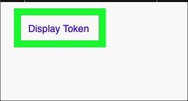
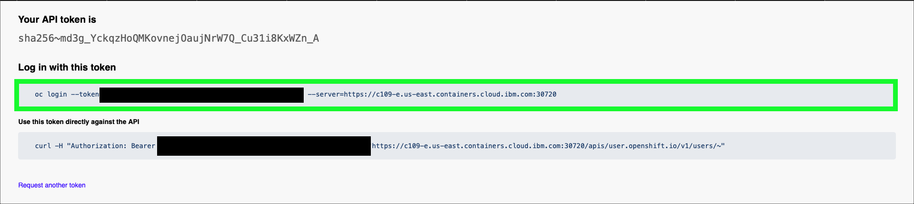

Environment Preparation and B2Bi Installation using IBM Cloud Shell
This demonstration guide assumes a Red Hat OpenShift cluster running on VMware on IBM Cloud environment provisioned in IBM Technology Zone (ITZ) here.
At this point, all users should have completed the steps in the IBM Sterling Data Exchange Level 3 learning plan to reserve the Red Hat OpenShift environment as described in the IBM Sterling Data Exchange Level 3 Introduction video. Before proceeding, validate that the reservation has been fully provisioned and is in the Ready state in ITZ. If not, please complete those steps before proceeding.

The following steps must be performed before delivering the demonstration. These steps should be performed well in advance of starting an actual client demonstration as it will take approximately 90 minutes for all steps to complete.
Access the OpenShift web console and verify the OpenShift cluster's health
- From the ITZ My Reservations page, click the tile for your OpenShift cluster reservation (must be in the Ready state).
At this time, make note of the Username and Password fields under the Shared Reservation heading as highlighted above. You will need these values in the next steps.
- Click the Open your IBM Cloud environment button on the reservations detail page.
A new window or tab will open in your browser.
- Enter the Username and Password for your OpenShift cluster (as described in step 1 above) and click the Log in button.

Before proceeding, verify that all 3 worker nodes were properly provisioned and available.
- Click the Compute menu option in left-hand menu bar and then click the Nodes menu option.

- Observe the Nodes that have the role of worker. There should be 3 of them with a status of Ready.
Are less than 3 worker nodes available and Ready**?
If there are less than 3 worker nodes in the Ready state, it is very likely you will encounter issues during the installation of IBM Sterling B2B Integrator. It is highly recommended to delete the current ITZ reservation and create a new one following the earlier instructions. Alternatively, you can open a ticket with the ITZ support team using the #itz-techzone-support slack channel and see if the support team can fix the broken node(s).
Access the Bastion server for the ITZ environment
In the next steps, you will access a virtual machine running in IBM Cloud referred to as a Bastion server. This server will be used to run various IBM Cloud, OpenShift, and other command line interfaces to install IBM Sterling B2B Integrator on the OpenShift cluster.
To access the Bastion server, you must create a remote shell from your local workstation to the Bastion using a secure shell protocol client (ssh). Most operating systems (MacOS, Linux, Microsoft Windows) have an ssh client built in. There are also 3rd party and open source clients like putty that can be utilized.
The screen images that follow utilize the native MacOS ssh client running from a terminal window. Specific instructions for other operating systems are not provided, but should be similar.
- Copy the Bastion SSH connection string for your ITZ reservation details page.

At this time, make note of the Bastion Password field as highlighted above. You will need this password in the next step.
- Open a terminal or command line window on your local workstation.
- In your local terminal or command line window, paste the Bastion SSH connection string and press enter.

- If prompted to accept the fingerprint, enter yes

- Enter the Bastion Password when prompted for a password.

Create install directory and retrieve the B2Bi installation scripts
- Create a new directory for the B2Bi installation scripts.
- Set the PROJECT_DIR environment variable.
- Change directories to PROJECT_DIR.
- Download the B2Bi installation script.
wget -O rapid-lab-b2bi-newdb-6122-ocpodf-bastion.zip https://github.com/IBM/SalesEnablement-SterlingDataExchange-L3/blob/main/tools/rapid-lab-b2bi-newdb-6122-ocpodf-bastion.zip?raw=true
Example output
[admin@bastion b2bi]$ wget -O rapid-lab-b2bi-newdb-61051-CloudShell.zip https://github.com/IBM/SalesEnablement-SterlingDataExchange-L3/blob/main/tools/rapid-lab-b2bi-newdb-6122-ocpodf-bastion.zip?raw=true
--2023-03-22 17:43:41-- https://github.com/IBM/SalesEnablement-SterlingDataExchange-L3/blob/main/tools/rapid-lab-b2bi-newdb-6122-ocpodf-bastion.zip?raw=true
Resolving github.com (github.com)... 140.82.114.4
Connecting to github.com (github.com)|140.82.114.4|:443... connected.
HTTP request sent, awaiting response... 302 Found Location: https://github.com/IBM/SalesEnablement-SterlingDataExchange-L3/raw/main/tools/rapid-lab-b2bi-newdb-6122-ocpodf-bastion.zip [following]
--2023-03-22 17:43:41-- https://github.com/IBM/SalesEnablement-SterlingDataExchange-L3/raw/main/tools/rapid-lab-b2bi-newdb-6122-ocpodf-bastion.zip
Reusing existing connection to github.com:443.
HTTP request sent, awaiting response... 302 Found
Location: https://raw.githubusercontent.com/IBM/SalesEnablement-SterlingDataExchange-L3/main/tools/rapid-lab-b2bi-newdb-6122-ocpodf-bastion.zip [following]
--2023-03-22 17:43:41-- https://raw.githubusercontent.com/IBM/SalesEnablement-SterlingDataExchange-L3/main/tools/rapid-lab-b2bi-newdb-6122-ocpodf-bastion.zip
Resolving raw.githubusercontent.com (raw.githubusercontent.com)... 185.199.109.133, 185.199.110.133, 185.199.111.133, ...
Connecting to raw.githubusercontent.com (raw.githubusercontent.com)|185.199.109.133|:443... connected.
HTTP request sent, awaiting response... 200 OK
Length: 26769 (26K) [application/zip]
Saving to: ‘rapid-lab-b2bi-newdb-61051-CloudShell.zip’
rapid-lab-b2bi-newdb-610 100%[===============================>] 26.14K --.-KB/s in 0s
2023-03-22 17:43:42 (98.2 MB/s) - ‘rapid-lab-b2bi-newdb-61051-CloudShell.zip’ saved [26769/26769]
[admin@bastion b2bi]$
- Unzip the installation script.
Example output
[admin@bastion b2bi]$ unzip rapid-lab-b2bi-newdb-61051-CloudShell.zip
Archive: rapid-lab-b2bi-newdb-61051-CloudShell.zip
inflating: COPYING
inflating: README.md
inflating: deploy_b2bi.sh
inflating: deploy_db2.sh
inflating: deploy_mq.sh
inflating: edited-values.yaml
inflating: env.sh
inflating: ocp-cli.sh
inflating: prepare_db2.sh
[admin@bastion b2bi]$
Install the IBM Cloud command line interfaces (CLIs), OpenShift CLIs, and Helm
- Run the ocp-cli.sh shell script to install the required tools.
Example output
[admin@bastion b2bi]$ ./ocp-cli.sh
Installing ibmcloud utility. Wait!
Installing Helm. Wait!
Installing OpenShift oc utility. Wait!
Installing Kubernetes kubectl. Wait!
cleaning up. Wait!
Checking versions
Client Version: 4.11.31
Kustomize Version: v4.5.4
version.BuildInfo{Version:"v3.11.2", GitCommit:"912ebc1cd10d38d340f048efaf0abda047c3468e", GitTreeState:"clean", GoVersion:"go1.18.10"}
Flag --short has been deprecated, and will be removed in the future. The --short output will become the default.
Client Version: v1.24.11
Kustomize Version: v4.5.4
ibmcloud version 2.15.0+79fb346-2023-02-21T22:06:52+00:00
[admin@bastion b2bi]$
Authenticate to the OpenShift cluster
For the next steps, the OpenShift login command to authenticate to the OpenShift cluster must be retrieved and executed.
-
Switch to the OpenShift web console browser window or tab opened earlier.
-
Click the IAM identity drop-down menu at top right of the OpenShift web console and click the Copy login command option.

- Click the Display Token link.

- Copy the string in the Log in with this token field.

- Switch back to the terminal with the open ssh session to the Bastion server.
- Paste the oc login command line copied in step 17.
Example output
[admin@bastion b2bi]$ oc login --token=sha256~KGOvFlJmXVd1UhyThw76v5TwGcv4FCMdnZIGJ6KJcaA --server=https://api.ocp-2700039nft-2v51.cloud.techzone.ibm.com:6443
Logged into "https://api.ocp-2700039nft-2v51.cloud.techzone.ibm.com:6443" as "kube:admin" using the token provided.
You have access to 71 projects, the list has been suppressed. You can list all projects with 'oc projects'
Using project "default".
Welcome! See 'oc help' to get started.
[admin@bastion b2bi]$
Install Db2 in the OpenShift cluster
- Run the environment setup and Db2 deploy scripts.
Example output
Now using project "db2" on server "https://c109-e.us-east.containers.cloud.ibm.com:30720".
You can add applications to this project with the 'new-app' command. For example, try:
oc new-app rails-postgresql-example
to build a new example application in Ruby. Or use kubectl to deploy a simple Kubernetes application:
kubectl create deployment hello-node --image=k8s.gcr.io/e2e-test-images/agnhost:2.33 -- /agnhost serve-hostname
serviceaccount/db2 created clusterrole.rbac.authorization.k8s.io/system:openshift:scc:privileged added: "db2" secret/db2-secret created service/db2-ci created service/db2-lb created statefulset.apps/db2 created
Wait 5 minutes...
Wait approximately 5 minutes for the Db2 containers to start loading in OpenShift before executing the next step.
Optional: monitor events in OpenShift web console
Use the OpenShift web console to monitor the Db2 project events and pod creation.


- Verify Db2 is up and running in the OpenShift cluster.
Failure
If no output is seen from the above command, or if it returns the following message:
Error from server (BadRequest): container "db2" in pod "db2-0" is waiting to start: ContainerCreating
wait and rerun oc logs -f ${DB2_NAME}-0 until the output starts steaming as shown in the example output below.
Example output
(*) Previous setup has not been detected. Creating the users...
(*) Creating users ...
(*) Creating instance ...
DB2 installation is being initialized.
Total number of tasks to be performed: 4 Total estimated time for all tasks to be performed: 309 second(s)
Task #1 start Description: Setting default global profile registry variables Task #1 end
Task #2 start Description: Initializing instance list Estimated time 5 second(s) Task #2 end
Task #3 start Description: Configuring DB2 instances Estimated time 300 second(s) Task #3 end
Task #4 start Description: Updating global profile registry Estimated time 3 second(s) Task #4 end
...
**Long output - truncated in this example**
...
2022-10-18-16.44.43.180954+000 I33681E386 LEVEL: Warning PID : 15858 TID : 139996146354048 PROC : db2start
INSTANCE: db2inst1 NODE : 000
HOSTNAME: db2-0
FUNCTION: DB2 UDB, base sys utilities, sqleReleaseStStLockFile, probe:16078
MESSAGE : Released lock on the file:
DATA #1 : String, 50 bytes
/database/config/db2inst1/sqllib/ctrl/db2strst.lck
Do not proceed until...
Do not proceed to the next step until the following line appears in the output:
/database/config/db2inst1/sqllib/ctrl/db2strst.lck
- Stop the oc logs command by entering Ctrl+c on the keyboard.
Example output
... FUNCTION: DB2 UDB, base sys utilities, sqleReleaseStStLockFile, probe:16078
MESSAGE : Released lock on the file:
DATA #1 : String, 50 bytes
/database/config/db2inst1/sqllib/ctrl/db2strst.lck
^C
itzuser@itz-2700039nft-srv4:~/b2bi$
Configure Db2 and create the required B2Bi tables
- Prepare the Db2 instance running in OpenShift.
This script does not generate output.
- Remotely connect to the Db2 container running in OpenShift.
Example output
Last login: Tue Oct 18 20:47:33 UTC 2022
[db2inst1@db2-0 ~]$
A remote connection is now open to the Db2 container running in OpenShift as shown by the change in the command prompt to: [db2inst1@db2-0 ~]$
- Run the db2reg.sh script.
Example output
DB20000I The UPDATE DATABASE MANAGER CONFIGURATION command completed successfully.
DB20000I The UPDATE DATABASE MANAGER CONFIGURATION command completed successfully.
DB20000I The UPDATE DATABASE MANAGER CONFIGURATION command completed successfully.
DB20000I The UPDATE DATABASE MANAGER CONFIGURATION command completed successfully.
DB20000I The UPDATE DATABASE MANAGER CONFIGURATION command completed successfully.
DB20000I The UPDATE DATABASE MANAGER CONFIGURATION command completed successfully.
DB20000I The UPDATE DATABASE MANAGER CONFIGURATION command completed successfully.
DB20000I The UPDATE DATABASE MANAGER CONFIGURATION command completed successfully.
- Create the B2Bi tables in Db2.
This will take ~5 minutes
This command will take approximately 5 minutes to complete.
Example output
CREATE DATABASE B2BIDB AUTOMATIC STORAGE YES USING CODESET UTF-8 TERRITORY US COLLATE USING IDENTITY PAGESIZE 4096 DFT_EXTENT_SZ 32
DB20000I The CREATE DATABASE command completed successfully.
CONNECT TO B2BIDB
Database Connection Information
Database server = DB2/LINUXX8664 11.5.5.1 SQL authorization ID = DB2INST1 Local database alias = B2BIDB
UPDATE DATABASE CONFIG USING STMT_CONC LITERALS
DB20000I The UPDATE DATABASE CONFIGURATION command completed successfully.
... Long output - truncated in this example ...
CREATE USER TEMPORARY TABLESPACE UTEMP4KTS IN DATABASE PARTITION GROUP IBMDEFAULTGROUP PAGESIZE 4 K MANAGED BY AUTOMATIC STORAGE EXTENTSIZE 32 BUFFERPOOL UTEMP4KBP FILE SYSTEM CACHING
DB20000I The SQL command completed successfully.
CONNECT RESET
DB20000I The SQL command completed successfully.
- Run the final Db2 update script.
Example output
Database Connection Information
Database server = DB2/LINUXX8664 11.5.5.1 SQL authorization ID = DB2INST1 Local database alias = B2BIDB
DB20000I The SQL command completed successfully. DB20000I The TERMINATE command completed successfully. DB20000I The FORCE APPLICATION command completed successfully. DB21024I This command is asynchronous and may not be effective immediately.
DB20000I The DEACTIVATE DATABASE command completed successfully.
10/18/2022 16:53:39 0 0 SQL1064N DB2STOP processing was successful.
SQL1064N DB2STOP processing was successful.
10/18/2022 16:53:41 0 0 SQL1063N DB2START processing was successful.
SQL1063N DB2START processing was successful.
- Exit the connection to the Db2 container in OpenShift.
Notice the command line prompt has changed back to the prompt for the ssh session to the Bastion server.
Install MQ in the OpenShift cluster
- Deploy MQ to OpenShift.
Example output
Now using project "mq" on server "https://c109-e.us-east.containers.cloud.ibm.com:30720".
You can add applications to this project with the 'new-app' command. For example, try:
oc new-app rails-postgresql-example
to build a new example application in Ruby. Or use kubectl to deploy a simple Kubernetes application:
kubectl create deployment hello-node --image=k8s.gcr.io/e2e-test-images/agnhost:2.33 -- /agnhost serve-hostname
serviceaccount/mq created clusterrole.rbac.authorization.k8s.io/system:openshift:scc:privileged added: "mq" service/mq-data created service/mq-web created
W1018 16:54:39.757566 34060 shim_kubectl.go:58] Using non-groupfied API resources is deprecated and will be removed in a future release, update apiVersion to "route.openshift.io/v1" for your resource
route.route.openshift.io/mq-web created
secret/mq-secret created
statefulset.apps/mq created
Update the environment variables with IBM container entitlement key and e-mail address
The next steps require editing of a file using the vi editor. If you are not familiar with the vi editor, it is strongly recommend to watch the following video before proceeding. There is no audio for this video.
- Open the vi editor.
- Open the IBM Entitlement key page here.
Note, re-authentication to ibm.com may be required.
- If an entitlement key does not already exist, click Add new key.

- Click the Copy button.

- Return to the IBM Cloud Shell window, use the arrow keys to move the cursor between the quotes in the export APIKEY line, press i to enter input mode, and paste the copied entitlement key between the quotes.
- Press the esc key to exit input mode.
- Arrow key down and over to between the quotes in the export EMAIL="" line and enter a your e-mail address.
- Press the esc key to exit input mode.
- Move cursor between the quotes on the export EMAIL="" line, press i to enter input mode, and enter your e-mail address.
- Press the : key and then the x key and enter to save and exit the vi editor.
- Verify the env.sh file looks like the example output below.
Example output
itzuser@itz-2700039nft-srv4:~/b2bi$ cat env.sh
#!/usr/bin/bash
## Locate your APIKEY (Entitlement Key For Container Software)
## here: https://myibm.ibm.com/products-services/containerlibrary
## Requires IBM ID and permission.
export PROJECT_NAME="b2bi"
export PROJECT_DIR="$HOME/b2bi"
export DB2_NAME="db2"
export MQ_NAME="mq"
export APIKEY="XXXXXXXXXXXXXXXXXXXXXXXXXXXXXXXXXXXXXXXXXXXXXXXXXXXXXX"
export EMAIL="andrew@jones-tx.com"
itzuser@itz-2700039nft-srv4:~/b2bi$
Install B2Bi in the OpenShift cluster
- Deploy the B2Bi related containers on OpenShift.
This will take approximately 70 minutes
This script will take approximately 70 minutes to complete.
Optional: monitor events in the OpenShift web console
Use the OpenShift web console to monitor the b2bi project events and pod creation.


Example output beginning.
Now using project "b2bi" on server "https://c103-e.us-south.containers.cloud.ibm.com:31501".
You can add applications to this project with the 'new-app' command. For example, try:
oc new-app rails-postgresql-example
to build a new example application in Ruby. Or use kubectl to deploy a simple Kubernetes application:
kubectl create deployment hello-node --image=k8s.gcr.io/e2e-test-images/agnhost:2.33 -- /agnhost serve-hostname
... Long output - truncated in this example ...
ibm-b2bi-prod/charts/ibm-sch/ibm_cloud_pak/pak_extensions/pre-install/namespace-administration/role.yaml
ibm-b2bi-prod/charts/ibm-sch/ibm_cloud_pak/pak_extensions/pre-install/namespace-administration/rolebinding.yaml
ibm-b2bi-prod/charts/ibm-sch/ibm_cloud_pak/pak_extensions/pre-install/namespace-administration/serviceaccount.yaml
ibm-b2bi-prod/charts/ibm-sch/ibm_cloud_pak/pak_extensions/pre-install/namespace-administration/setupNamespace.sh
Example output ending.
... Long output - truncated in this example ...
NAME: sterling-fg
LAST DEPLOYED: Wed Mar 22 18:06:32 2023
NAMESPACE: b2bi
STATUS: deployed
REVISION: 1
NOTES:
Please wait while the application is getting deployed.
- Run the below command to check the status of application server replica sets. At least 1 replica must be in 'READY' state.
kubectl get replicasets -l release=sterling-fg -n b2bi
- Run the below command to check the status of the application server pods for the release.
kubectl get pods -l release=sterling-fg -n b2bi -o wide
To view the logs for a pod, run the below command.
kubectl logs
- Access the application by running the following url
Below app defined PVC name configuration will be deprecated in future release
Do not close the ssh session or the terminal window until the command completes. Once the command successfully completes, the ssh session can be closed (type exit at the command prompt or simply close the terminal window).
Verify all three B2Bi pods are running in OpenShift
- Return to the OpenShift web console window in your browser.
- Click the Home menu on the right-hand menu bar, and then click Projects.

- Click the b2bi project link.
- Click the Pods link under Inventory.
There should be 3 pods in the b2bi project. The pods will go through various states while starting up. Do not proceed to the next chapter until all 3 pods have a Status of Running AND the Ready column shows 1/1 for each pod! Note, it may take several minutes for the sterling-fg-b2bi-asi-server-0 pod to change the Ready state from 0/1 to 1/1. You may observe this pod restarting multiple times. This is normal, just be patient.

That concludes the setup of the environment. Proceed to the next part of the demonstration guide to configure B2Bi.